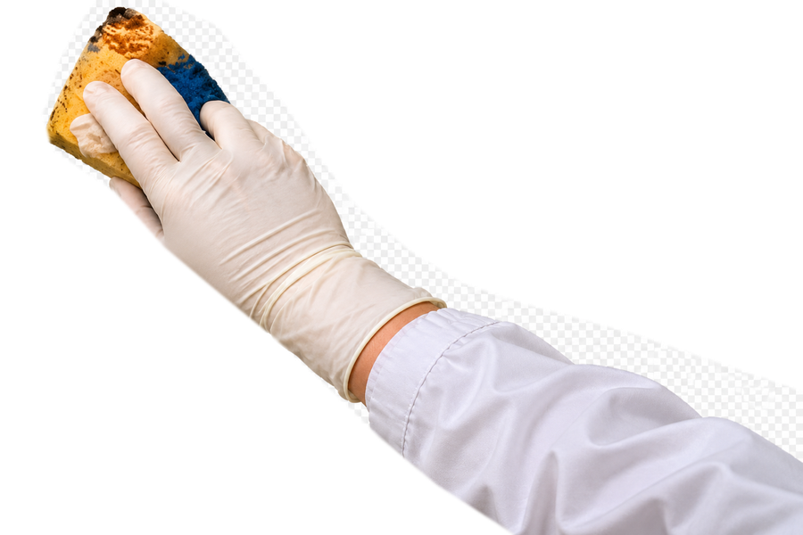

Usa il dito, la penna LIM o il mouse. · Michelangelo, Creazione di Adamo, Cappella Sistina. Simulazione didattica, non una tecnica reale di pulitura dell'affresco.
Prof. Marco Cigolotti · Realizzato con il supporto dell'IA · Nessun dato personale raccolto